KT Cloud Tech Talk · 2026.03.27
바이브코딩, 그 너머
AI와 일하는 방식이 달라지고 있습니다
신재호 · Engineering Director @ MindLogic
Introduction
신재호
Engineering Director @ MindLogic
- AI 엔지니어 4년+ · 15명 개발팀 리드
- Gemini 3 서울 해커톤 솔로 참가 · 3위 수상
- Claude Code 중심 전사 AI Workflow 주도 (6개월)
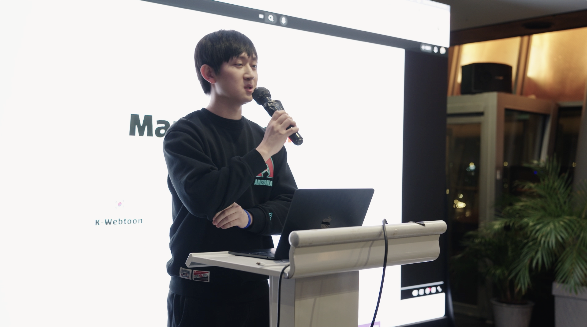
[img — 발표 사진]
'">
Hackathon
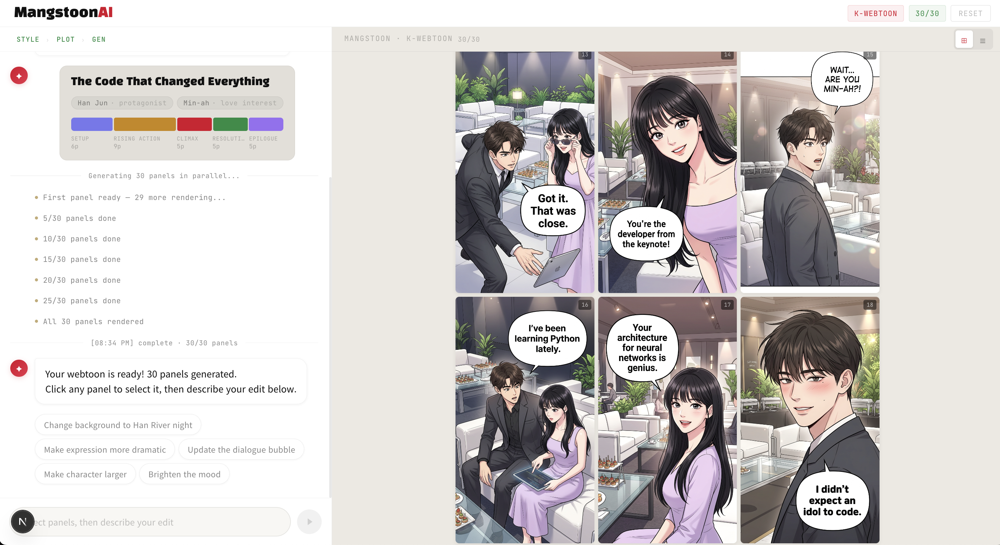
[img — MangstoonAI K-웹툰 결과물]
'">
Hackathon
MangstoonAI — 4가지 스타일
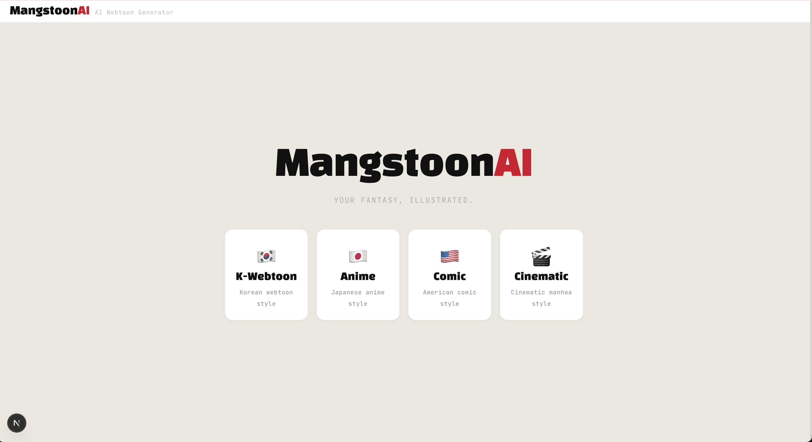

Architecture
Google ADK — 싱글 오케스트레이터
Root
Agent
generate_image
Nano Banana 2
create_story_panel
스토리보드 생성
Hackathon — Claude Code
Claude Code로 어떻게 개발했나
개발 순서
1. Gemini API 문서 전부 docs/ 폴더에
2. 아키텍처 설계 (프롬프트 + 에이전트 구조)
3. FE / BE / AI / Infra 병렬 실행
4. Playwright MCP로 자동 QA + 디버깅 + 배포
핵심
AI한테 맥락을 먼저 줌
→ API 문서, 프롬프트 가이드 전부 컨텍스트에
병렬 실행
→ 하나 끝날 때까지 기다리지 않음
4-5시간 만에 풀스택 배포
→ AI 없이는 불가능했을 작업
Vibe Coding
"You just give in to the vibes, embrace exponentials, and forget that the code even exists." — Andrej Karpathy
추천 도구
Google Stitch — AI 디자인
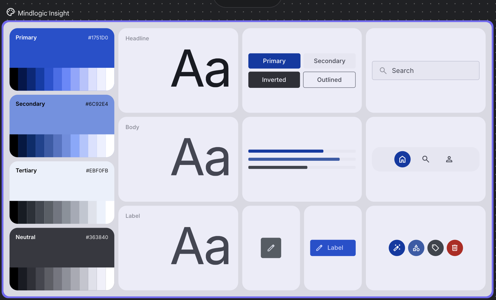
[Stitch 스크린샷]
'">
- → 비디자이너도 프로토타이핑 가능
- →
DESIGN.md 자동 리턴
- → 색상, 타이포, 컴포넌트 일관성
- → AI가 디자인도 잘 하는 시대
오늘은
바이브코딩 강의가
아닙니다
30인 스타트업의 실전 이야기
Part 1 — Claude Code 도입기
우리 팀의 변화
2025.03
Cursor 도입 — 에디터 안에서 AI와 대화. 혁신적이었으나...
2025.09
한계 직면 — $40 플랜 + 추가 API 비용 급증. 토큰 소모 제어 어려움
2025.10
Claude Code 도입 시도 — 바이럴 폭발. “Cursor 구독 취소” 트렌드
2025.12
마인드 전환 — AI 코드를 기본 수용. 직접 수정할 필요가 거의 사라짐
2026.02
개발자 전원 Max Plan — 체감 생산성 10배, PR 수 2배 이상. 풀스택 작업 가능
Part 1
팀 도입기
- 전원 Claude Pro Plan 제공
- 사내 스터디 + best practices 문서
- "Cursor에서 안 되는 걸 Claude Code에서 해결"
- 점차 Max Plan으로 전환
- 비용 예측 가능: 5시간 단위 리셋 + 주간 한도
- Cursor 대비 비용 1/10
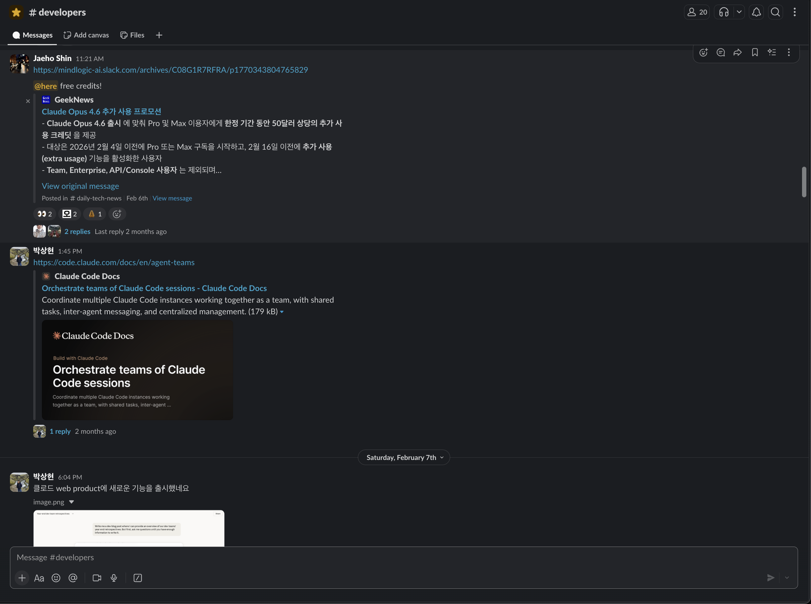
[img — #developers 채널 스크린샷]
'">
Part 1
생산성 10x
CLAUDE.md — 가장 중요한 파일
AI한테 주는 온보딩 문서. 이 파일 하나로 결과가 완전히 달라집니다.
# Project Rules
- Stack: Next.js, FastAPI, PostgreSQL
- All PRs require tests
- Use Korean for comments
- Follow conventional commits
- Check /docs before implementation
# DB Schema
- users, organizations, subscriptions
- Always use parameterized queries
터미널: Ghostty 추천 (Anthropic 공식 추천)
Part 1
실전 팁 ①②
01 Code Review 자동화
claude-code-action
/install-github-app
PR 올리면 Claude가 자동 리뷰
한 줄 설치, 즉시 사용
02 Skills
반복 작업을 마크다운으로 정의
슬래시 커맨드로 실행
/create-pr
/code-review
/sentry-fix
/write-test
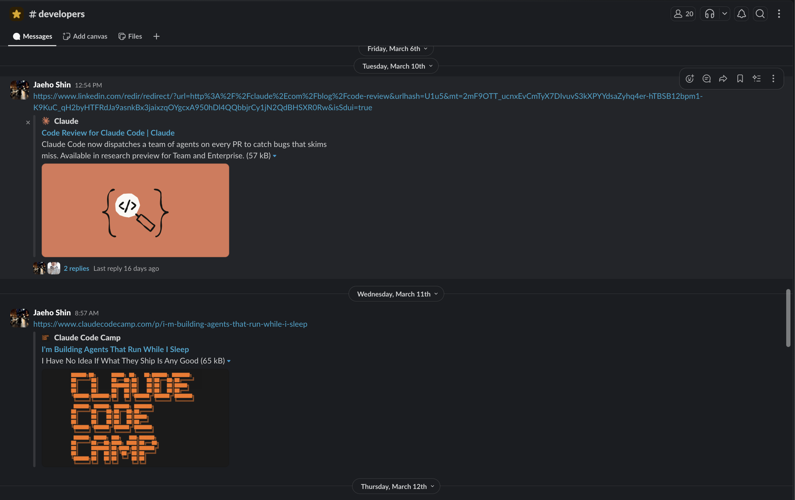
[img — #developers 채널]
'">
Part 1
실전 팁 ③ Plugins
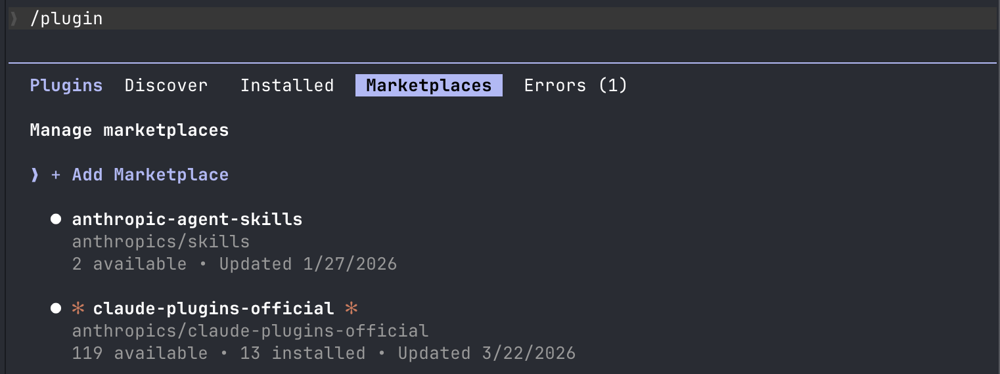
[img — Plugins 마켓플레이스]
'">
119개+ 공식 플러그인 — /plugin
제가 글로벌로 설치한 것들
frontend-design — UI/UX 가이드라인
claude-md-management — CLAUDE.md 관리
code-review — PR 리뷰 자동화
prompt-engineering — 사내 커스텀
Part 1
실전 팁 ④ MCP 주의: 토큰 블로트
MCP의 함정
GitHub MCP 하나만 연결해도
65K 토큰 (32.5%) 소모
편리하지만 비용 + 속도에 영향
CLI 우선 원칙
GitHub → gh
AWS → aws cli
Jira → jira cli
실제로 쓰는 MCP: 3개만
Context7
최신 라이브러리 문서 실시간 조회
없으면 AI가 옛날 API로 코드 작성
Playwright
브라우저 QA 자동화
final stage에서만 사용
Part 1
AI 개발의 진화 — 6개월마다 바뀝니다
2024
Prompt Engineering
프롬프트를 잘 쓰는 게 핵심
"이렇게 물어봐야 좋은 답이 나온다"
2025 초
Context Engineering
어떤 맥락을 AI한테 줄 것인가
CLAUDE.md, docs 폴더, 스키마 문서
2025 말~2026
Agent Harness
에이전트를 감싸는 시스템 설계
Skills · Hooks · Loops · Spec 파일
설정이 프롬프팅보다 중요해진 시대. 따라가는 습관이 도구보다 중요합니다.
Part 1
이 분들을 팔로우하세요 사진 찍어두세요
LinkedIn 정구봉 — AI 트렌드 큐레이션
X / LinkedIn이 가장 빠르게 follow up 할 수 있는 채널입니다.
Part 1
사내에서는 이렇게 따라갑니다
#daily-tech-news
HackerNews · GeekNews 자동 수집 (매일 아침 + 1시간 간격)
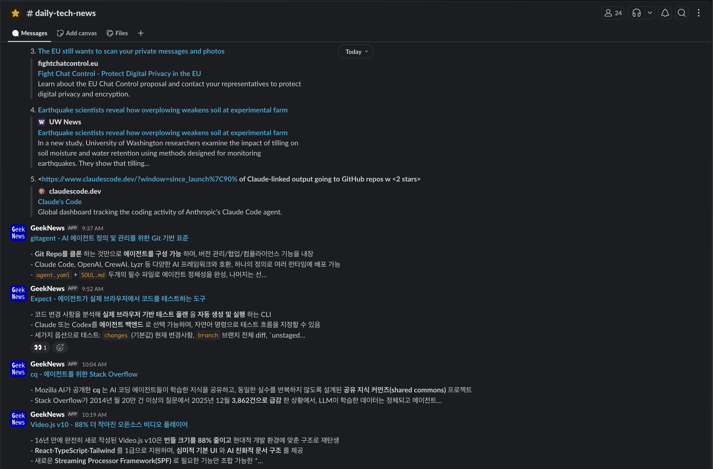
#developers
팀원들이 유용한 글, 도구, 팁 공유
Part 1 — 속도
Claude의 개발 속도가 미쳤습니다
74 releases · 52 days — Feb 1 ~ Mar 24, 2026
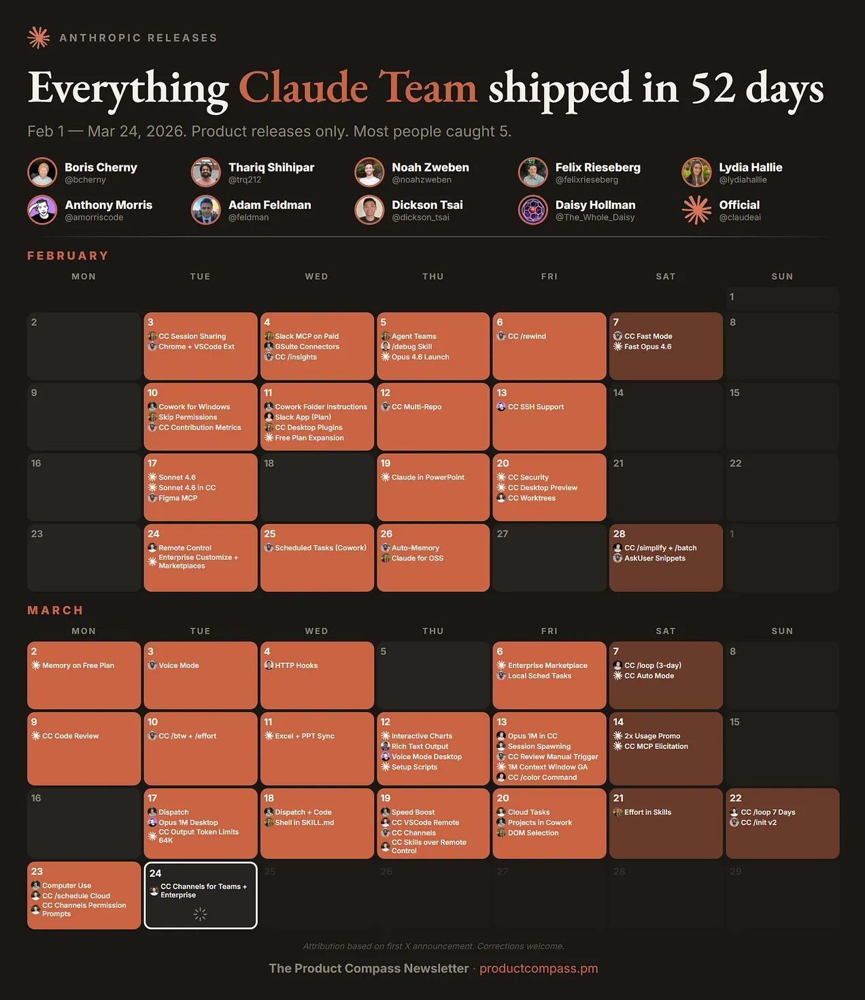
[img — Claude Shipping Calendar]
'">
Source: The Product Compass — 매주 새 기능. 따라가는 것 자체가 경쟁력.
Part 1
Claude, 코드 너머
Claude Code는 개발자 도구이지만,
Claude 자체는 훨씬 넓습니다.
- 파일 생성 & 분석
- 리서치 & 요약
- 기획 초안 작성
- 프로토타입 설계
- Desktop App으로 바로 사용
사업팀 + 디자이너도 활용 중 (확대 목표)
'">
Part 2 — Jarvis
"터미널 기능을
슬랙에서 할 수 있는 거 아닌가?"
01
DBeaver 열어서
복사-붙여넣기?
필요 없음
03
슬랙은 이미 전원 사용
추가 온보딩 불필요
Claude Agent SDK — Claude Code를 프로그래밍 방식으로 사용할 수 있는 SDK
Part 2
우리 회사에는
잠 안 자는 직원이
있습니다
Part 2
MindLogic
생성형 AI 솔루션 스타트업
FactChat
멀티 LLM 플랫폼
GPT + Claude + Gemini
30개교+ / 8만+ 가입자
서울대, 서강대, 경희대, 충남대 등
Informe
RAG 챗봇
홈페이지 / 문서 기반 답변
24시간 안내
대학 입학처, 공공기관
Blooming
AI 아이돌 챗봇
말투 + 성격 학습
팬 소통 플랫폼
제품 3개 = CS 폭발 → 이게 Jarvis를 만든 이유입니다.
Part 2
MindLogic Jarvis — Slack에 사는, 마인드로직의 모든 것을 아는 비서
Part 2 — CS 자동화
CS 자동 트리아지 — 하루 수십 건, 사람 없이 1차 대응
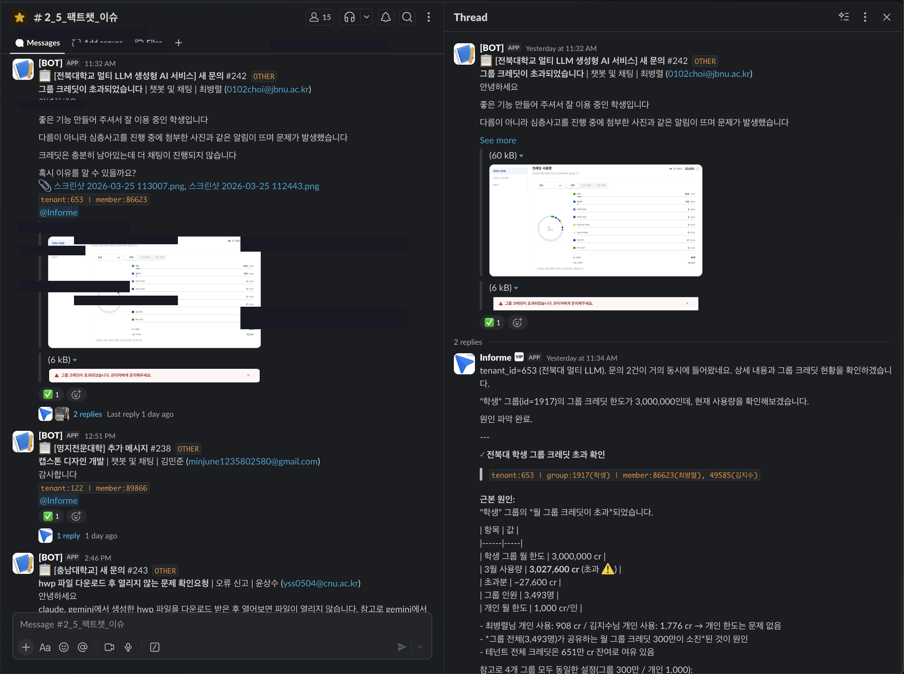
실제 #팩트챗_이슈 채널 — 왼쪽: 고객 문의 접수 / 오른쪽: Jarvis 자동 분석
자동화 플로우
감지
고객 문의 접수 → Slack 채널 자동 전달
분류
문의 유형 자동 태그 (크레딧, 오류, 기능요청)
분석
Jarvis가 DB 조회 → 원인 파악 → 즉시 답변
결과
SQL 정확도 90% · 응답 시간 1분 이내
Part 2 — 정리
Jarvis가 하는 일
CS 자동화
- •고객 문의 → Slack 자동 전달
- •유형별 자동 분류 + 태그
- •DB 조회 → 원인 즉시 파악
- •SQL 공개로 검증 가능
30분 → 1분
업무 자동화
- •견적서 자동 생성 (Excel + PDF)
- •이메일 자동 트리아지 + 전달
- •Jira 티켓 일괄 생성 + 배정
- •캘린더 일정 확인 + 수정
담당자 없이 즉시 처리
개발 지원
- •코드 분석 + 답변
- •비개발자도 PR 생성 가능
- •Sentry 에러 자동 분석
- •GitHub 이슈 연동
75%+ 자동 처리
가장 많이 쓰는 사람은 개발자가 아닙니다. 사업팀·CS팀이 역대 사용량 1위.
"담당자 확인해주세요" → "@Jarvis" 로 바뀐 것. 그게 전부입니다.
Part 2
Context Switching의 제거
AS-IS · 7개 도구 · 30분+
1 DB 클라이언트 열고 SQL 작성
2 과금 로직 확인 → 코드베이스
3 버그인지 확인 → Sentry
4 설정 확인 → 다시 DB
5 고객 답변 작성 → Slack
6 티켓 생성 → Jira
7 핫픽스 필요 → GitHub
→
TO-BE · 1개 도구 · 2분
1 @Jarvis 한 줄
DB, 코드, Sentry, Jira, GitHub
모든 맥락을 동시에 들고 있음
단계 사이에서 잊어버리지 않음
시스템을 다 아는 사람도 30분. Jarvis는 2분. 맥락을 동시에 들고 있으니까.
Part 2 — 더 많은 사례
이메일 트리아지 + 캘린더
Gmail → Slack 자동 전달
수신 고객사 메일 자동 감지
분류 문의 유형별 담당자 라우팅
전달 Slack 채널에 요약 포워딩
발송 드래프트만 — 사람이 확인 후
캘린더 일정 확인/수정
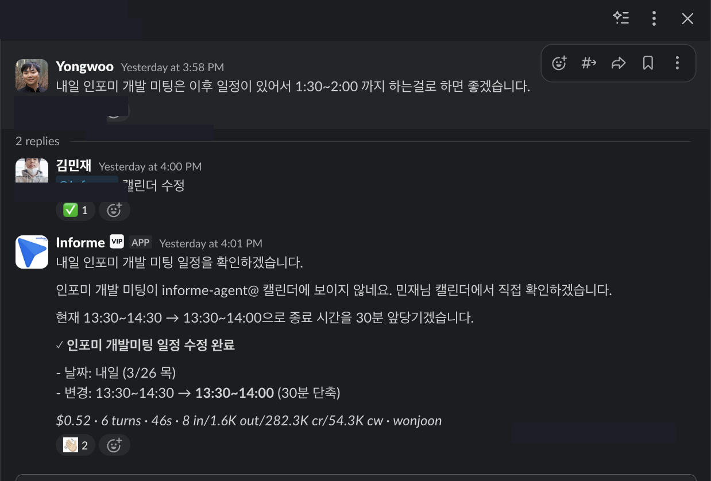
Part 2
비개발자가 코드를 고칩니다
CS 담당자가 슬랙에서:
@Jarvis CSV 업로드에서 인코딩 감지 및 변환 로직을 추가해줘
코드를 모르는 사람이 코드를 고쳤습니다.
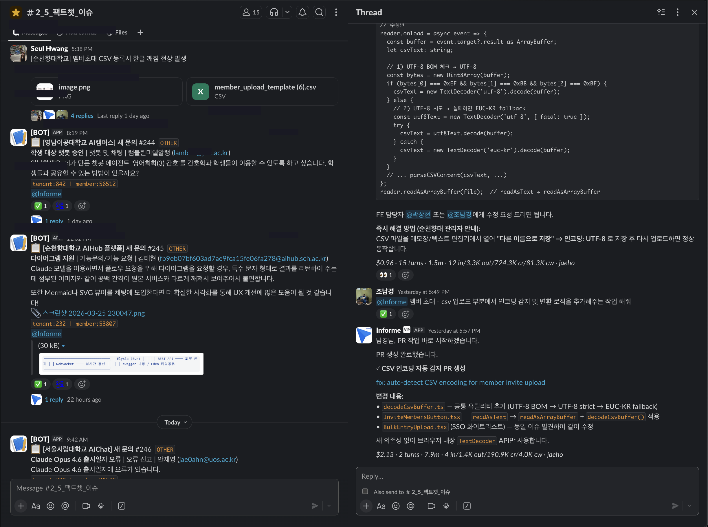
[img — 비개발자가 만든 PR]
'">
Part 2
솔직한 한계
문제
DB 컬럼명을 자주 틀림
느린 쿼리 → Read-Only DB auto-scale
자신감 있게 틀림 = 가장 위험
대응
Memory — 실수마다 기억 축적
SQL 정확도 40% → 90%
SQL 공개 — 모든 응답에 쿼리 포함
사람 확인 — 이메일은 드래프트만
70~80%를 자동화하고, 나머지를 사람이 검증하는 구조
Part 2 — Memory
Memory — 쓸수록 똑똑해지는 구조
어떻게 작동하나
사용자
"users 테이블이 아니라 auth_users야. 다음부터 틀리지마"
↓
Jarvis → Memory 자동 저장
db_schema_correction.md
---
테이블명: auth_users (NOT users)
컬럼: id, email, org_id, ...
↓
다음 대화
같은 실수 다시 안 함. 기억이 누적될수록 정확도 향상
Memory Index 구조
MEMORY.md (인덱스)
├── db_schema.md
│ — 테이블/컬럼 매핑
├── business_rules.md
│ — 견적 계산 로직, 크레딧 정책
├── common_mistakes.md
│ — 자주 틀리는 패턴
├── team_contacts.md
│ — 담당자별 역할
└── query_patterns.md
— 검증된 SQL 템플릿
40% → 90%
SQL 정확도 (6개월간 Memory 누적)
Part 2
보안 + 아키텍처
아키텍처
Slack Message
↓
FastAPI Bot Router
↓
Claude Agent SDK
↓
↓
EC2 한 대
K8s 없음. LangChain 없음.
Part 3
"에이전트가 못 하면,
내가 어떻게 더 잘할 수 있었을까를
생각합니다."
프롬프트 충분했나?
컨텍스트를 다 줬나?
지시가 명확했나?
테스트 방법을 줬나?
Part 3
AI가 90%를 해주는 시대.
나머지 10%가
가치를 결정합니다.
아키텍처 판단
시스템 설계
취향 (Taste)
의도 (Intent)
"AI 시대 당신의 가치는 취향에 있다" — Tony Lee
Next
자는 동안에도
AI가 일하는 세계
도구 도입
→
말 걸면 일함
→
알아서 일함
→
???
현재는 사람이 말을 걸어야 일합니다. 다음은 proactive — 직원처럼 알아서.
Next — Loop Architecture
이미 실현되고 있는 패턴: Loop
Ralph Loop
while :; do
cat PROMPT.md | claude-code
done
# + Stop Hook으로 자동 반복
- → 매 반복 새 컨텍스트, 결과는 git에 누적
- → 실패 → AGENTS.md에 기록 → 다음 루프에서 학습
- → 10회+ 실패 시 자동으로 작업 분할
핵심 인사이트
복잡한 멀티에이전트 시스템보다
단순한 루프의 반복이 이깁니다.
GPT-5-mini + RLM Loop
GPT-5 단독 대비 정답률 2배
— Tony Lee, tonylee.im
Part 3
실천하기
개인
- 일과 중 시간 쓰는 곳 점검
- 내가 반복하는 작업이 뭔지 파악
- Claude Code만 있는 게 아님
- Genspark, Cursor, Lovable, Stitch 등
용도별로 좋은 도구가 이미 많습니다
조직
- AI Tool 적극적으로 사용 권장
- 당장 필요 없어도 — 익숙해지는 게 먼저
- "써봐라, 엄청 좋다" 라는 문화
- 한두 명이 먼저 쓰고 전파하는 구조
6개월 뒤, AI를 쓰는 사람과 안 쓰는 사람의 격차는
지금과는 비교할 수 없을 겁니다.
Wrap-up
오늘의 핵심 3가지
PART 1
Claude Code로
일하는 방식이 바뀜
- CLAUDE.md 하나로 결과가 달라짐
- 병렬 세션으로 10x 생산성
- Skills + Plugins + MCP로 확장
- 6개월마다 핵심이 바뀜 → 따라가기
PART 2
Slack에 AI 에이전트를
심었더니
- Slack에서 CS·이슈·견적 바로 처리
- 담당자 안 물어봐도 알아서 답변
- 코드 확인, PR, Jira — 전부 Slack 안에서
- 개발자 context switching 대폭 감소
PART 3
결국
사람의 영역
- 아키텍처와 취향은 자동화 안 됨
- AI 90% + 사람 10%가 가치 결정
- 도구보다 판단력
- 직접 써봐야 압니다
감사합니다
신재호 · Engineering Director @ MindLogic
Q&A
Q&A
궁금한 점이 있으시면 편하게 질문해주세요
신재호 · Engineering Director @ MindLogic
1 / 35